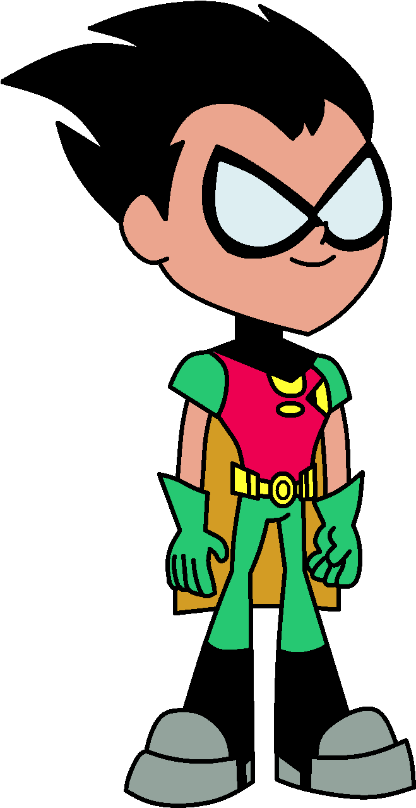
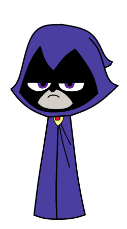
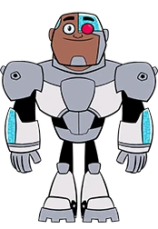
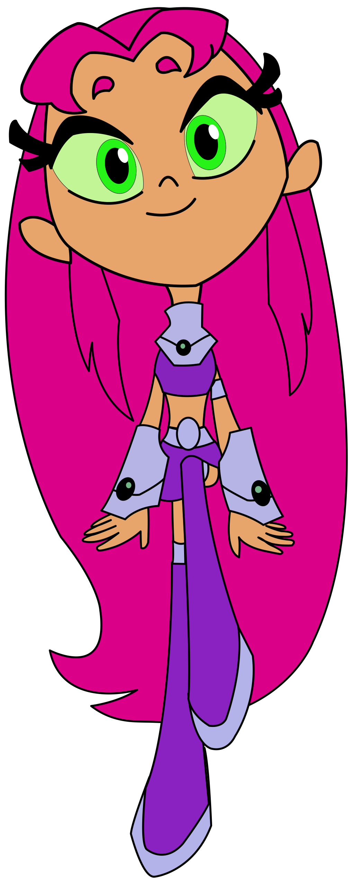

é uma série de animação norte-americana, criada por Sam Register e Glen Murakami, baseada em personagens da DC e produzida pela Warner Bros. Animation
Com estreia em 19 de julho de 2003, nos Estados Unidos, manteve-se no ar por 3 anos e teve seu último episódio, Things Change, exibido no dia 15 de setembro de 2006 – alcançando 5 temporadas e 65 episódios.
No Brasil, a série foi transmitida pelo Cartoon Network Brasil, e também pelo SBT, com sua estreia no dia 7 de dezembro de 2003. A série permaneceu sendo televisionada até o ano de 2008. A DC Comics lançou uma série de histórias em quadrinhos, inspirada pelo desenho e, intitulada Teen Titans Go!, publicada no Brasil pela Panini Comics na revista Jovens Titãs e, em edições encadernadas, pela Abril Jovem.
Robin
Líder dos Titãs, bastante ágil e habilidoso, é o único que não tem superpoderes, mas possui um equipamento com armas de combate contra o crime e habilidades de artes marciais extremamente desenvolvidas. Quando está em missão, é um líder sério, responsável e tático, que sempre está disposto a ajudar seus amigos. Apesar de levar a sério suas missões, ele demonstra ter um lado extrovertido e brincalhão que adora comer pizza e jogar videogame com os amigos. Demonstra ser apaixonado por Estelar, mas tem problemas em admitir. Durante a primeira temporada, foi o protagonista principal, onde enfrenta o seu arqui-inimigo Slade, que o manipulou, fazendo-o se voltar contra seus amigos. Seu outro rival é Red X, que na verdade foi um disfarce que Robin usou pra se infiltrar na base do Slade, mas depois surge um outro jovem criminoso que rouba o traje se tornando o atual Red X.

Ravena
Ravena é a filha do demônio Trigon e da humana Arella. É a mais poderosa dos Titãs, seus poderes se baseiam em manipulação das sombras, telecinese, telepatia, voo, magia demoníaca, entre outros. É uma garota tímida que costuma se esconder através do capuz, pois não sabe demonstrar suas emoções e afetos. Bastante solitária e antissocial, não é chegada em diversões como os seus amigos e é a única que não ri das piadas de Mutano, chegando a se irritar com suas brincadeiras.

Cyborg
Segundo em comando dos Titãs. Muito forte e atlético, é metade humano e metade robô. Por seu corpo ser quase que totalmente de metal, ele possui força sobre-humana, voo, e seus braços mecânicos se transformam em canhões biônicos que causam alta destruição. Sendo também o gênio da equipe, entende tudo sobre tecnologia e mecânica, é responsável pelos projetos do carro e a nave dos Titãs. Costuma ser o membro mais temperamental e esquentado da equipe, chegando a se irritar com facilidade com os outros, especialmente com Robin, mas apesar disso, tem um grande coração.

Estelar
Vindo do planeta Tamaran, é uma princesa tamaraneana. Bastante doce e meiga, adora felicidade e adotou um mascote bonitinho chamado Silkie. Possui super força, voo e pode lançar rajadas de energia ultravioleta. Ela tem uma irmã chamada Estrela Negra que é o seu oposto, sendo malvada, fria e egoísta, fazendo de tudo para se livrar de Estelar e assumir o futuro trono de Tamaran.

Mutano
É o mais jovem da equipe, sua pele e cabelo são verdes. Bastante ágil e rápido, costuma ser o mais piadista dos Titãs, contando piadas até nos piores momentos. Ele tem o poder de se transformar em qualquer animal, independente se esse animal é existente, extinto, híbrido ou até mesmo alienígena.